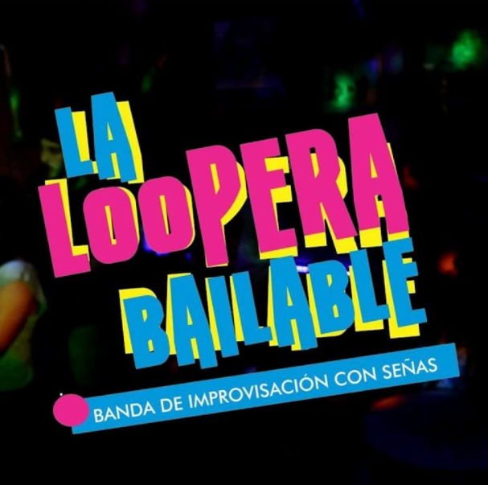
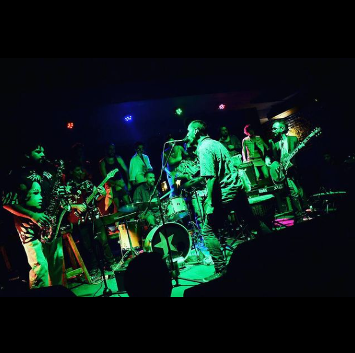
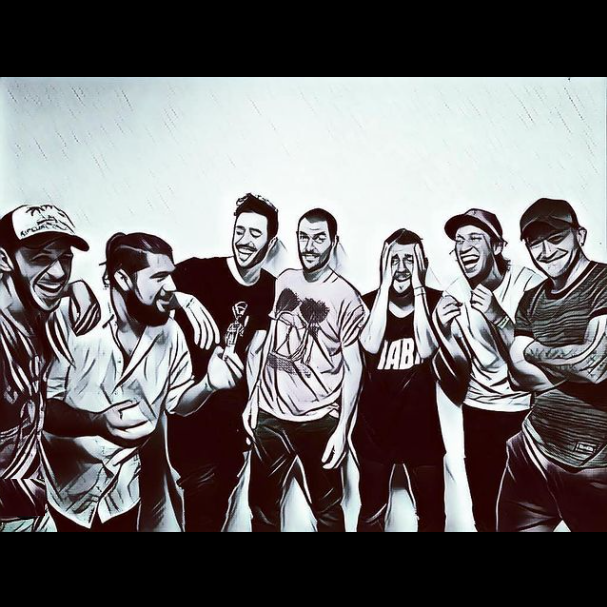
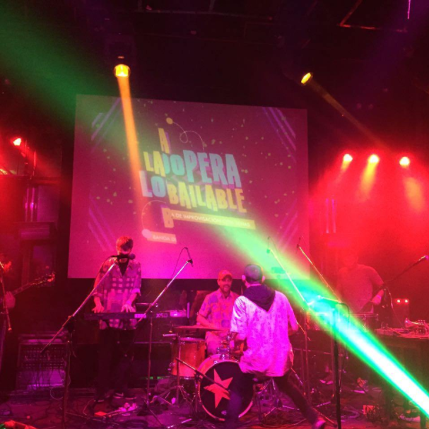
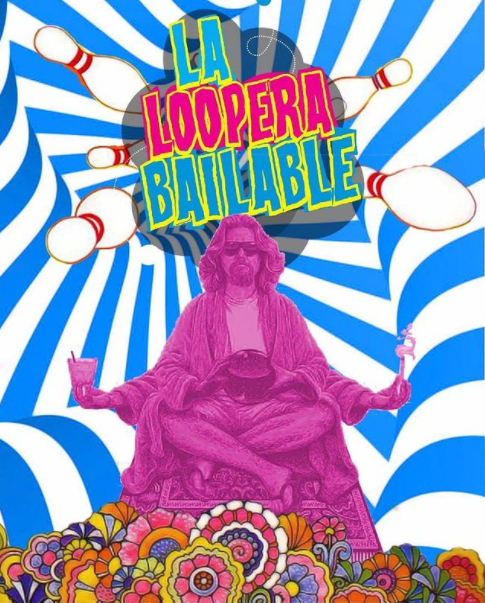

La Loopera Bailable
Orquesta Levivista ( LVV - Lo Vamo Viendo)
👉Nosotro LA LOOPERA 👉Ustedes BAILABLE
👌Dirección : Marcos Romano🤘
💥Del Oeste para el Mundo💥
👉I🤘M👌P🤙R✊O👈





Jugamos a la musica, gozamos y disfrutamos mientras coordinamos nuestros instrumentos para generar los mas variados sonidos...
Estos sonidos nacen del centro del ser y tras fluir por nuestro sistema nervioso terminan por desprenderse de nuestro cuerpo precizamente a traves de nuestros dedos para llegar en forma de nota/indicacion a los "Looperines" (receptores e interpretes del sonido) .Dando asi nacimiento a la iprovisacion.
La sorpresa constante es , justamente, una constante dentro de este estilo...
Advertimos a quienes osen acercarse que no van a poder mantener su cuerpo estatito y por eso sugerimos venir livianos de ropa pero, principalmente, abiertos de mente!